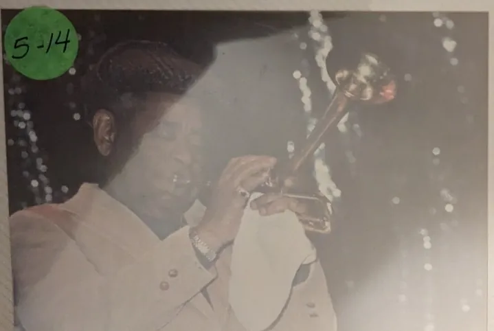

Fifteenth Annual · Oscar Micheaux Awards
Fifteenth Annual Oscar Micheaux Awards
The original album combines the printed awards program with photographs of honors being presented, speakers addressing audiences, and musicians performing.
Black Filmmakers Hall of Fame
The Fifteenth Annual Oscar Micheaux Awards program accompanies photographs of award presentations and performers. A second album from 1988 shows further music, speeches, and social gatherings.
The annual program
The program preserved in one original album provides the historical setting for its photographs. A second album labeled 1988 contains an extended sequence of performances and receptions, presented as a distinct photographic grouping.
Fifteenth Annual · Oscar Micheaux Awards
The original album combines the printed awards program with photographs of honors being presented, speakers addressing audiences, and musicians performing.

Photographic sequence · 1988
Jazz musicians, vocalists, stage presentations, and gatherings fill the second album. They remain together as a coherent photographic sequence while their particular occasions are researched.
The photographic record
Browse the photographs from both published 1988 albums, including portraits, performances, and the printed awards program.